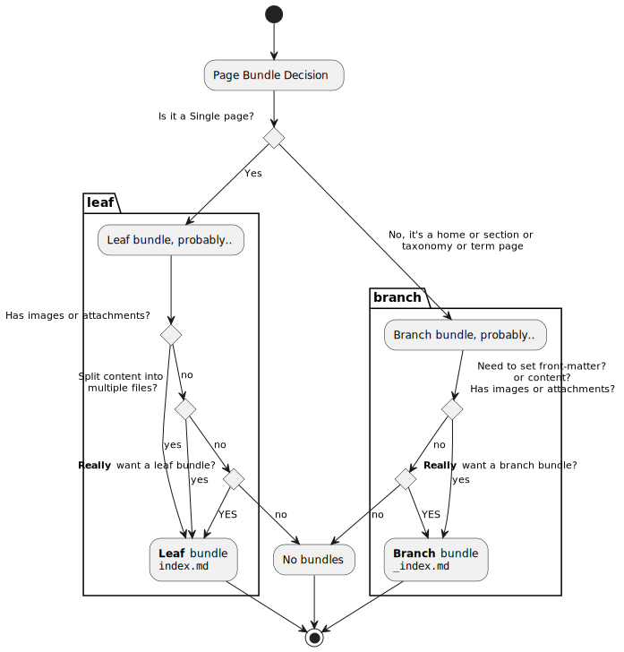

Hugo 目录结构#
1
2
3
4
5
6
7
8
9
10
11
12
13
14
15
16
17
|
.(hugo-root)
|-- archetypes/ (内容模板文件)
|-- assets/ (not created by default)
| |-- css/ (adding custom css to replace css in themes)
| | |-- *.*
| | `-- *.*
| `-- ***/
|-- content/ (存放文章内容，通过"hugo new"创建的文件以此为根目录)
| `-- posts/
| `-- *.md
|-- data/ (存储网站用到一些配置、数据文件。文件类型可以是yaml|toml|json等格式，生成网站时使用)
|-- docs/ (github pages可以选用docs作为网站根目录，添加publishdir: 'docs'将网站生成在该目录下)
|-- layouts/ (渲染文章内容的模板文件，相较于themes/<theme-name>/layouts目录下的同名文件具有更高优先级)
|-- resources/
|-- static/ (存储图片、css、js等静态资源文件；md中引用图片的根目录位于此文件夹下)
|-- themes/ (存储不同主题，可以方便的切换网站的风格样式)
`-- config.yml (或config.toml，config.json，网站默认配置文件)
|
tree –dirsfirst –charset=ascii /path/to/directory将生成一个很好的ASCII树，可以将其整合到文档中：
1
2
3
4
5
6
7
8
9
10
11
12
13
14
15
16
17
18
19
20
21
22
23
24
25
26
27
28
29
30
|
(example fire tree)
| |-- de-DE
| | |-- art.mshc
| | |-- artnoloc.mshc
| | |-- clientserver.mshc
| | |-- noarm.mshc
| | |-- resources.mshc
| | `-- windowsclient.mshc
| `-- en-US
| |-- art.mshc
| |-- artnoloc.mshc
| |-- clientserver.mshc
| |-- noarm.mshc
| |-- resources.mshc
| `-- windowsclient.mshc
`-- IndexStore
|-- de-DE
| |-- art.mshi
| |-- artnoloc.mshi
| |-- clientserver.mshi
| |-- noarm.mshi
| |-- resources.mshi
| `-- windowsclient.mshi
`-- en-US
|-- art.mshi
|-- artnoloc.mshi
|-- clientserver.mshi
|-- noarm.mshi
|-- resources.mshi
`-- windowsclient.mshi
|
配置文件分离设计#
…待更新…
静态资源（图片等）存放方式#
参考：
Hugo官方文档-Oorganization
Hugo官方文档-Page Bundles
选择合适的内容组织方式：（参考：Hugo: Leaf and Branch Bundles）

…待更新…
配置生成leaf bundles类型文章的模板#
参考：
Hugo官方文档-Archetypes
stackoverflow：adding a page bundle with hugo new
在archetypes文件夹内创建如下文件结构：
1
2
3
4
5
|
.(archetypes)
|-- post-bundle/ <-- (create)
| |-- images/ <-- (an empty dir will be generated)
| `-- index.md <-- (write archetype in, similar as default.md)
`-- default.md
|
其中，post-bundle文件夹下的内容将作为模板在创建文章时自动生成；在index.md文件中写入以下内容：
1
2
3
4
5
6
7
8
9
10
|
---
title: {{ replace .Name "-" " " | title }}
date: {{ .Date }}
lastmod: {{ .Date }}
tags:
- default
categories:
- default
draft: true
---
|
执行以下命令，将会在posts文件夹下生成名为"post(dir)name"的文件夹，并在其中自动创建index.md和images空文件夹（与archetypes文件夹下的post-bundle具有相同结构）。
1
|
hugo new --kind post-bundle posts/<post(dir)name>
|